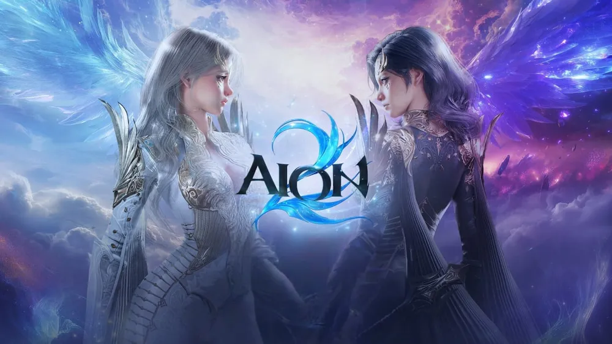

NCSOFT · PC 기반 크로스플랫폼
아이온2 원격 PC 플레이
아이온2는 엔씨소프트가 PC에서 자동전투를 완전히 뺀 수동 컨트롤 MMORPG입니다. 모바일·태블릿에서만 반자동 '어시스트 모드'를 지원합니다.
그래서 원격PC는 '자동사냥용'이 아니라, 고사양 PC 없이 아이온2 PC 버전을 플레이하는 용도로 쓰입니다.
원격PC로 아이온2 시작하기
- 카카오톡으로 옵션 상담
아이온2는 그래픽 기준이 높아 외장 그래픽 옵션 위주로 안내드립니다. - 원격 접속 프로그램 설치
내 노트북·PC에 AnyDesk, 크롬 원격 데스크톱, 파섹(Parsec), 리모트T 중 하나를 설치합니다. 반응 속도가 중요한 아이온2는 파섹을 추천합니다. - 원격PC에서 퍼플로 실행
원격PC에서 엔씨소프트 퍼플(PURPLE)로 로그인 후 아이온2를 실행합니다. - 유선 인터넷 권장
수동 전투라 반응 속도가 중요하니, 내 기기는 가능하면 유선 또는 5GHz 와이파이로 접속하세요.
아이온2 한눈에 보기
| 개발·서비스 | 엔씨소프트 |
|---|---|
| PC 자동전투 | 없음 (수동 컨트롤 전용) |
| 모바일 | 어시스트 모드 (반자동, 모바일·태블릿 전용) |
| 원격PC 용도 | 고사양 PC 대체 · 외부에서 PC 버전 접속 |
아이온2 PC 사양
| 항목 | 최소 | 권장 |
|---|---|---|
| CPU | Ryzen 3 3300X / Intel i5-10400F | Ryzen 5 5600X / Intel i5-12400F |
| RAM | 16GB | 32GB |
| GPU | GTX 1660 | RTX 3060 Ti |
| 운영체제 | Windows 10 64bit | Windows 10 64bit |
엔씨소프트 공식 안내 기준
원격 플레이 전 꼭 알아두세요원격 화면은 네트워크를 거치기 때문에 약간의 입력 지연이 생길 수 있습니다. 회피·스킬 타이밍이 중요한 고난도 PvP보다는 필드·던전 플레이에 적합하며, 내장 그래픽 옵션은 아이온2 최소 GPU 기준(GTX 1660)에 못 미치므로 외장 그래픽 옵션(라이젠 2600) 구동 여부를 카카오톡으로 먼저 확인해 드립니다.
아이온2 추천 임대 옵션
라이젠 2600
6코어 12쓰레드 · RAM 24GB · 외장 그래픽카드
단독 고사양6코어 12쓰레드 · RAM 24GB · 외장 그래픽카드
아이온2는 공식 최소 GPU가 GTX 1660급이라 외장 그래픽카드가 달린 라이젠 2600 옵션을 기준으로 안내드립니다. 구동 가능한 그래픽 설정은 이용 전 카카오톡으로 확인해 드립니다.
아이온2 원격 임대 자주 묻는 질문
아이온2도 원격PC로 자동사냥이 되나요?
아니요. 아이온2 PC 버전에는 자동전투가 없습니다. 반자동 어시스트 모드는 모바일·태블릿에서만 지원됩니다. 원격PC는 PC 버전을 직접 플레이하는 환경으로 이용하시면 됩니다.
맥북이나 저사양 노트북에서도 할 수 있나요?
네. 게임은 원격PC에서 실행되고 내 기기는 화면만 받기 때문에, 원격 접속 프로그램이 돌아가는 기기라면 이용할 수 있습니다.
입력 지연은 얼마나 되나요?
회선·거리·기기에 따라 다릅니다. 유선 인터넷에서는 일반 플레이에 큰 불편이 없는 편이지만, 프레임 단위 조작이 필요한 PvP는 체감될 수 있습니다.